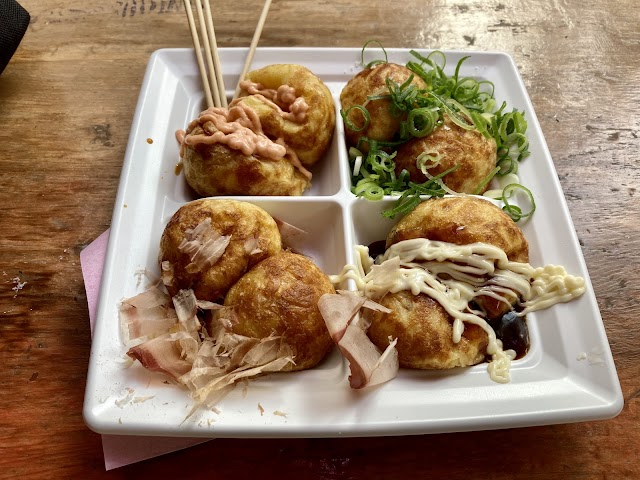
| 営業時間 | 月・火・水・木・金 10:30〜21:00 ／ 土・日 9:30〜21:00 |
|---|---|
| 定休日 | なし(要最終確認) |
| 住所 | 大阪府大阪市中央区難波千日前１１−１９ |
| 予約 | 可 — ☎ 06-6631-0127 ／ 公式サイト |
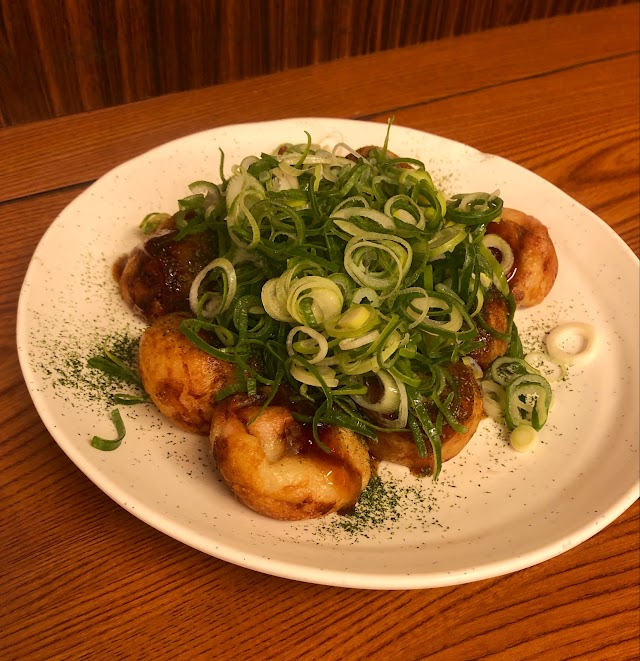
| 営業時間 | 月・火・水・木・日 11:00〜22:00 ／ 金・土 11:00〜23:00 |
|---|---|
| 定休日 | なし(要最終確認) |
| 住所 | 大阪府大阪市阿倍野区阿倍野筋１丁目２−３４ |
| 予約 | 要確認 — ☎ 06-6622-5307 ／ 公式サイト |
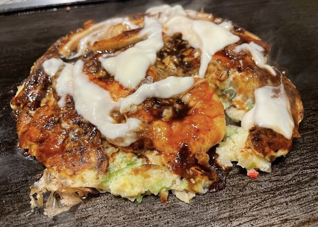
| 営業時間 | 月・火・水・木・金・土・日 11:00〜22:00 |
|---|---|
| 定休日 | なし(要最終確認) |
| 住所 | 大阪府大阪市中央区道頓堀１丁目４−１５ |
| 予約 | 要確認 — ☎ 06-6212-6360 ／ 公式サイト |
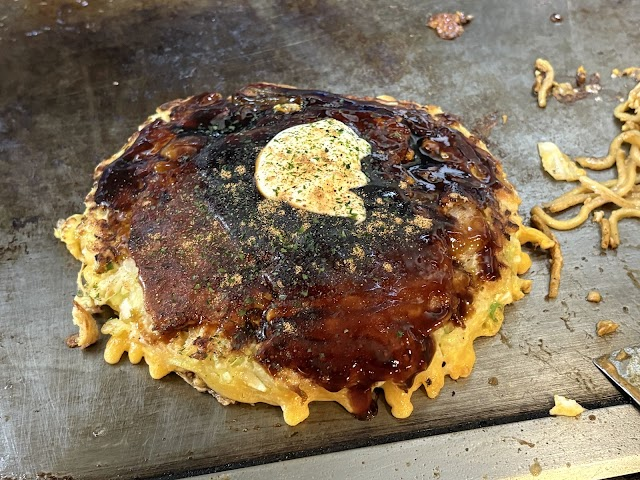
| 営業時間 | 月・火・水・木・金・土 11:45〜20:30 |
|---|---|
| 定休日 | 日曜 |
| 住所 | 大阪府大阪市北区角田町９−２０ 新梅田 食道街 |
| 予約 | 要確認 — ☎ 06-6361-5804 ／ 公式サイト |
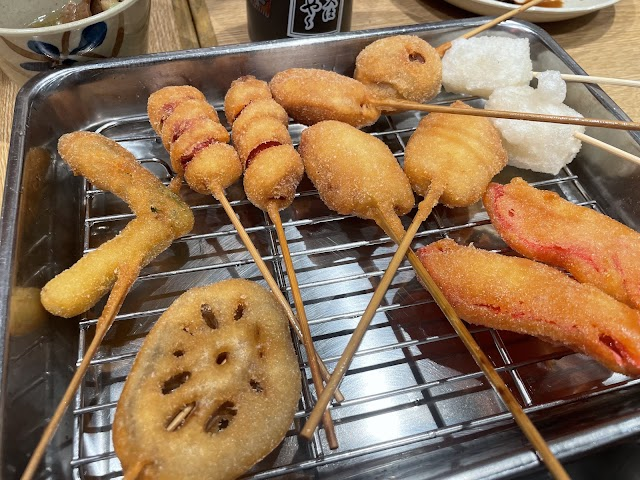
| 営業時間 | 月・火・水・木・金 11:00〜22:30 ／ 土・日 10:30〜22:30 |
|---|---|
| 定休日 | なし(要最終確認) |
| 住所 | 大阪府大阪市浪速区恵美須東２丁目３−９ |
| 予約 | 要確認 — ☎ 050-5493-3805 ／ 公式サイト |
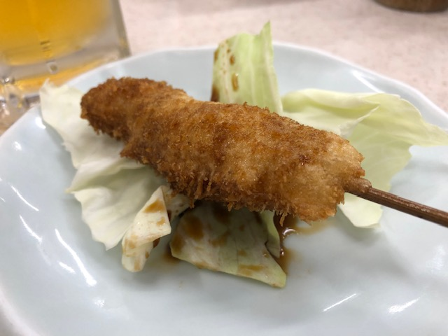
| 営業時間 | 月・火・水・金・土・日 10:30〜20:30 |
|---|---|
| 定休日 | 木曜 |
| 住所 | 大阪府大阪市浪速区恵美須東３丁目４−１３ |
| 予約 | 要確認 — ☎ 06-6643-6332 |
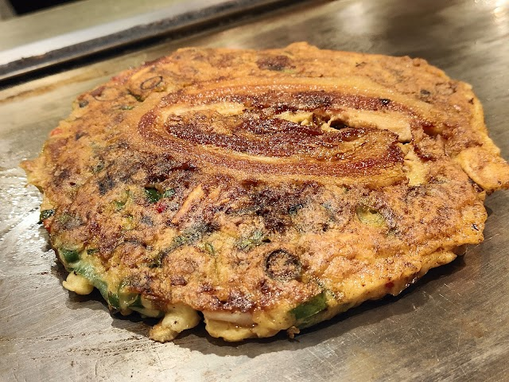
| 営業時間 | 月・火・水・木・金・土・日 11:30〜21:00 |
|---|---|
| 定休日 | なし(要最終確認) |
| 住所 | 大阪府大阪市淀川区十三本町１丁目８−４ |
| 予約 | 要確認 — ☎ 06-6308-4625 ／ 公式サイト |
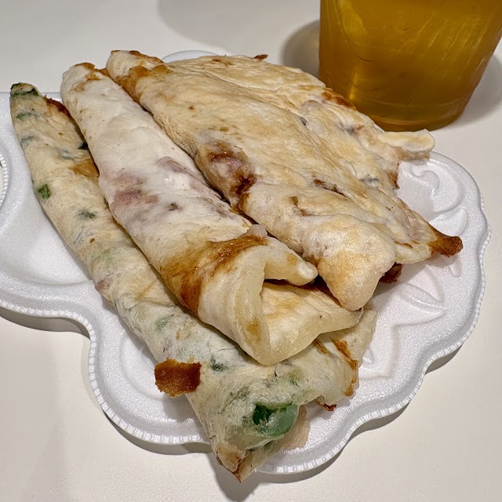
| 営業時間 | 月・火・水・木・金・土・日 10:00〜21:30 |
|---|---|
| 定休日 | なし(要最終確認) |
| 住所 | 大阪府大阪市北区梅田１丁目１３−１３ 阪神百貨店梅田本店 B1F スナックパーク |
| 予約 | 要確認 — ☎ 06-6345-1201 ／ 公式サイト |
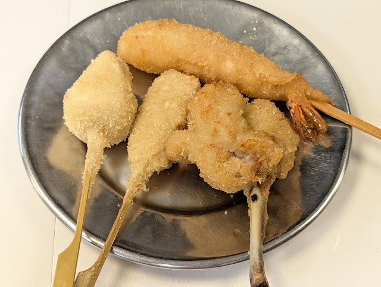
| 営業時間 | 月・火・水・木・金 14:00〜22:00 ／ 土 11:00〜22:00 ／ 日 11:00〜21:30 |
|---|---|
| 定休日 | なし(要最終確認) |
| 住所 | 大阪府大阪市北区角田町９−２０ |
| 予約 | 要確認 — ☎ 06-6312-6615 ／ 公式サイト |
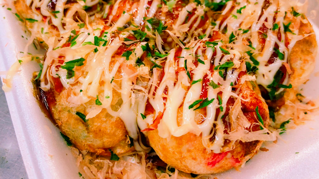
| 営業時間 | 月・火・水・木・金 10:30〜20:30 ／ 土 10:30〜21:30 ／ 日 10:30〜20:00 |
|---|---|
| 定休日 | なし(要最終確認) |
| 住所 | 大阪府大阪市中央区西心斎橋２丁目１８−４ |
| 予約 | 要確認 — ☎ 06-6211-0519 ／ 公式サイト |
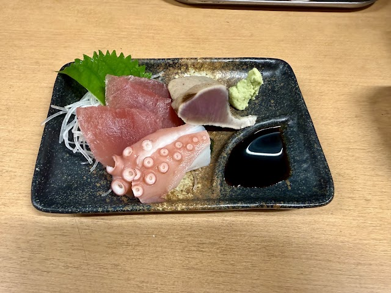
| 営業時間 | 月・火・水・木・金・土・日 10:00〜22:00 |
|---|---|
| 定休日 | なし(要最終確認) |
| 住所 | 大阪府大阪市北区天神橋４丁目１１−３ |
| 予約 | 要確認 |
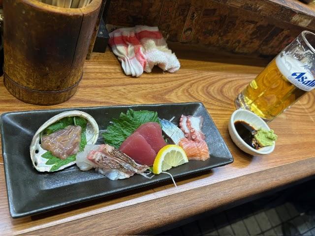
| 営業時間 | 月・火・木・金・土・日 9:00〜22:30 |
|---|---|
| 定休日 | 水曜 |
| 住所 | 大阪府大阪市都島区東野田町３丁目２−１３ |
| 予約 | 要確認 — ☎ 06-6358-6598 |
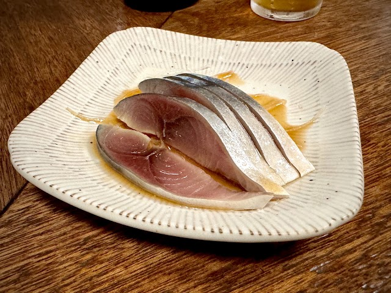
| 営業時間 | 火・水・木・金・土 13:00〜22:00 |
|---|---|
| 定休日 | 月・日曜 |
| 住所 | 大阪府大阪市阿倍野区阿倍野筋１丁目６−１ |
| 予約 | 要確認 — ☎ 06-6641-5280 |
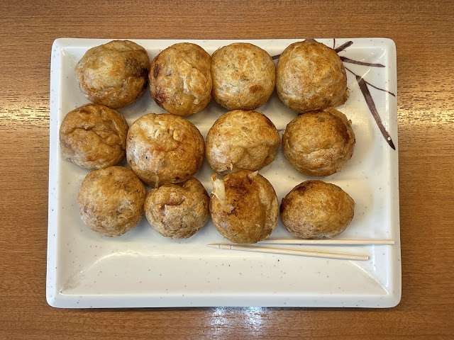
| 営業時間 | 月・火・水・木・金・土・日 11:00〜21:00 |
|---|---|
| 定休日 | なし(要最終確認) |
| 住所 | 大阪府大阪市西成区玉出西２丁目３−１ |
| 予約 | 要確認 — ☎ 06-6651-2311 ／ 公式サイト |
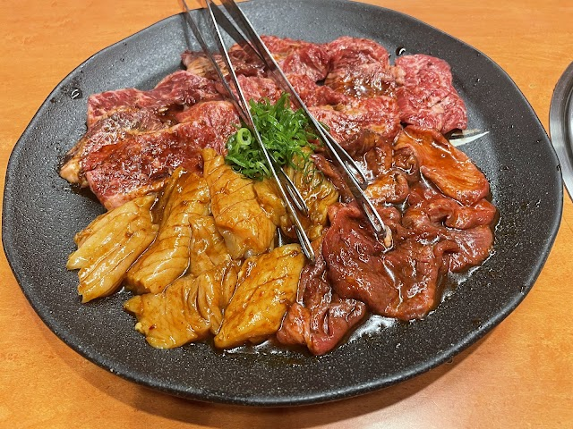
| 営業時間 | 火・水・木 17:00〜21:30 ／ 金 17:00〜22:30 ／ 土 11:00〜22:30 ／ 日 11:00〜21:30 |
|---|---|
| 定休日 | 月曜 |
| 住所 | 大阪府大阪市天王寺区下味原町３−３ |
| 予約 | 可 — ☎ 06-6777-2390 |
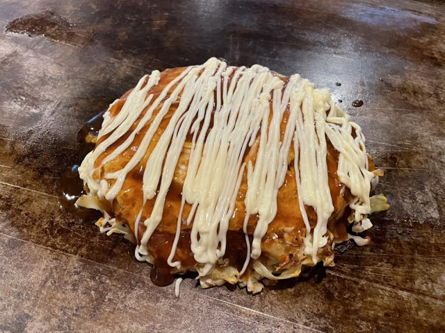
| 営業時間 | 水・木・金・土・日 11:30〜21:45 |
|---|---|
| 定休日 | 月・火曜 |
| 住所 | 大阪府大阪市生野区桃谷３丁目３−２ |
| 予約 | 可 — ☎ 06-6717-0094 |
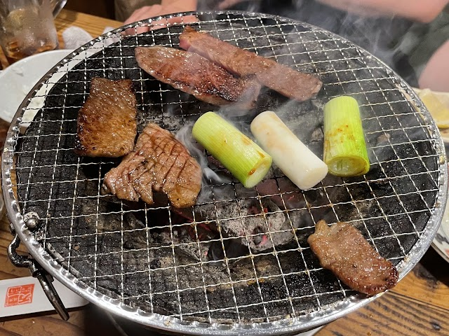
| 営業時間 | 火・水・木・金・土・日 16:00〜0:00 |
|---|---|
| 定休日 | 月曜 |
| 住所 | 大阪府大阪市北区南森町１丁目２−１４ ロイヤルハイツ 1F |
| 予約 | 可 — ☎ 06-6361-1371 ／ 公式サイト |
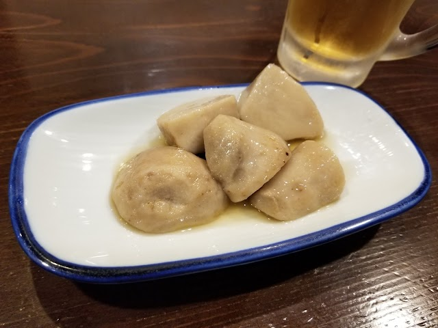
| 営業時間 | 月・火・水・木・金・土 17:00〜22:00 |
|---|---|
| 定休日 | 日曜 |
| 住所 | 大阪府大阪市西区九条３丁目２９−１２ |
| 予約 | 要確認 — ☎ 06-6583-0736 |
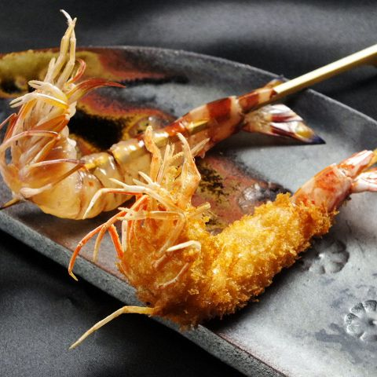
| 営業時間 | 月・火・水・金・土・日 17:00〜21:30 |
|---|---|
| 定休日 | 木曜 |
| 住所 | 大阪府大阪市中央区難波１丁目２−１０ 法善寺ＭＥＯＵＴＯビル 1F |
| 予約 | 可 — ☎ 06-6211-4673 ／ 公式サイト |
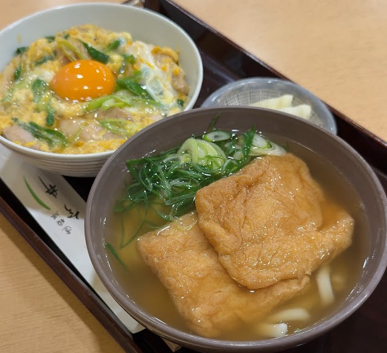
| 営業時間 | 月・火・木・金・土・日 11:30〜21:00 |
|---|---|
| 定休日 | 水曜 |
| 住所 | 大阪府大阪市中央区道頓堀１丁目７−２２ |
| 予約 | 可 — ☎ 06-6211-0319 ／ 公式サイト |
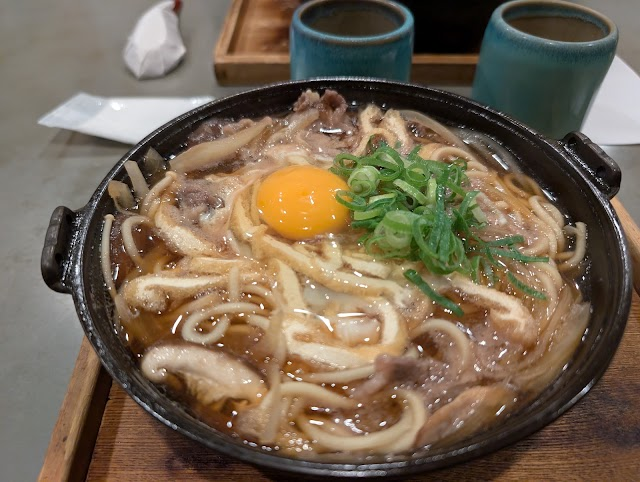
| 営業時間 | 月・火・水・木・金・土 11:00〜18:00 |
|---|---|
| 定休日 | 日曜 |
| 住所 | 大阪府大阪市中央区南船場３丁目８−１ |
| 予約 | 要確認 — ☎ 06-6251-3339 |
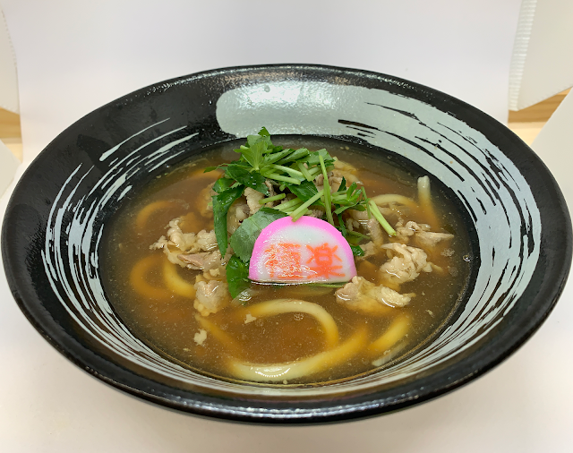
| 営業時間 | 月・火・水・木・金 11:00〜15:00, 17:30〜23:30 ／ 土・日 11:00〜23:30 |
|---|---|
| 定休日 | なし(要最終確認) |
| 住所 | 大阪府大阪市東成区東小橋１丁目１−５ |
| 予約 | 要確認 — ☎ 06-6981-1333 ／ 公式サイト |
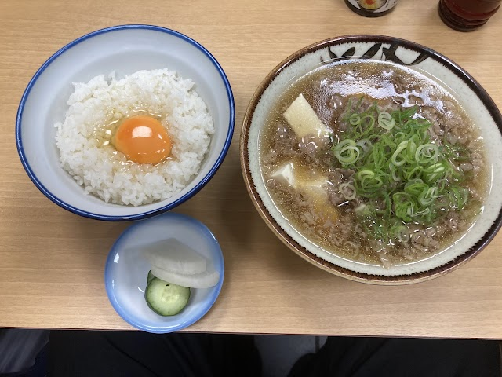
| 営業時間 | 月・水・木・金・土・日 10:30〜14:30 |
|---|---|
| 定休日 | 火曜 |
| 住所 | 大阪府大阪市中央区難波千日前８−１ |
| 予約 | 要確認 — ☎ 06-6633-6861 ／ 公式サイト |
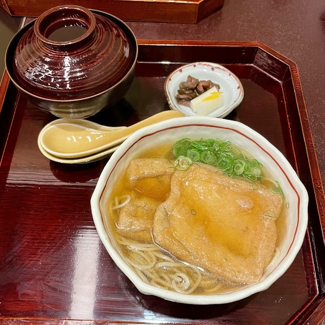
| 営業時間 | 月・火・水・木・金 11:30〜15:00 |
|---|---|
| 定休日 | 土・日曜 |
| 住所 | 大阪府大阪市中央区平野町４丁目６−１８ |
| 予約 | 要確認 — ☎ 06-6231-5770 ／ 公式サイト |
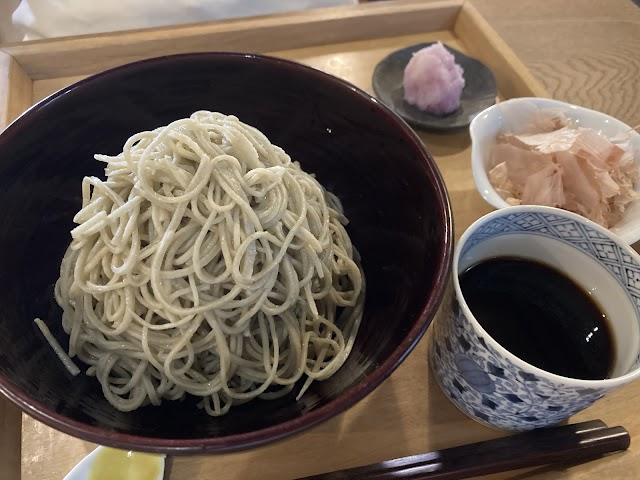
| 営業時間 | 月・火・水・木・金・土 11:30〜14:30, 17:30〜20:30 |
|---|---|
| 定休日 | 日曜 |
| 住所 | 大阪府大阪市中央区安堂寺町２丁目２−２６ |
| 予約 | 要確認 — ☎ 06-7504-5260 ／ 公式サイト |
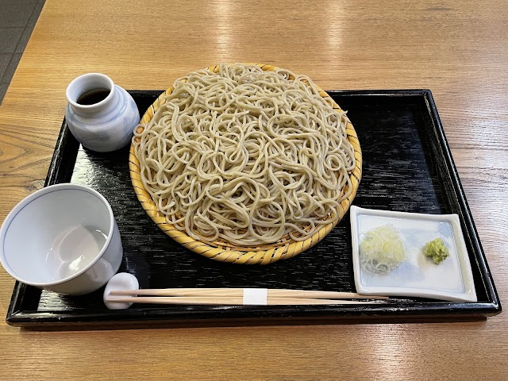
| 営業時間 | 火・水・木 11:30〜17:00 ／ 金・土 11:30〜20:00 |
|---|---|
| 定休日 | 月・日曜 |
| 住所 | 大阪府大阪市北区西天満４丁目１−１８ |
| 予約 | 要確認 — ☎ 06-6361-5457 ／ 公式サイト |
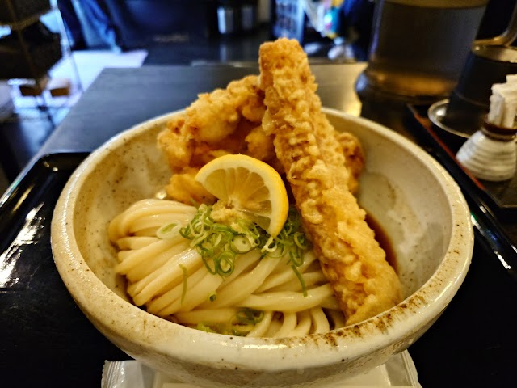
| 営業時間 | 月 11:00〜15:00 ／ 木・金・土・日 11:00〜15:00, 17:30〜21:00 |
|---|---|
| 定休日 | 火・水曜 |
| 住所 | 大阪府大阪市淀川区新高６丁目１２−７ 神埼川三和マンション |
| 予約 | 要確認 — ☎ 06-6868-9494 |
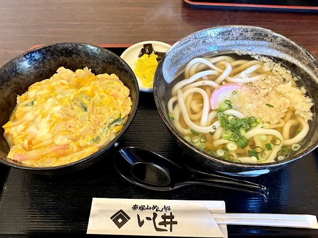
| 営業時間 | 月・火・木・金・土・日 11:30〜14:30, 17:00〜21:00 |
|---|---|
| 定休日 | 水曜 |
| 住所 | 大阪府大阪市住吉区帝塚山東１丁目１２−１０ |
| 予約 | 可 — ☎ 06-6675-9608 ／ 公式サイト |
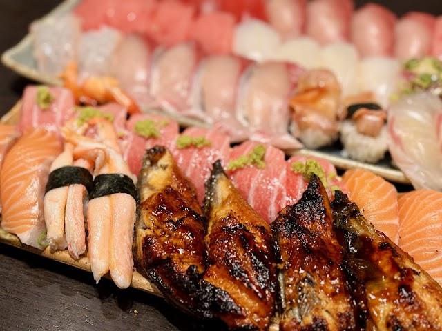
| 営業時間 | 月・水・木・金・土・日 11:00〜21:30 |
|---|---|
| 定休日 | 火曜 |
| 住所 | 大阪府大阪市北区天神橋５丁目５−２ |
| 予約 | 要確認 — ☎ 06-6351-4319 ／ 公式サイト |
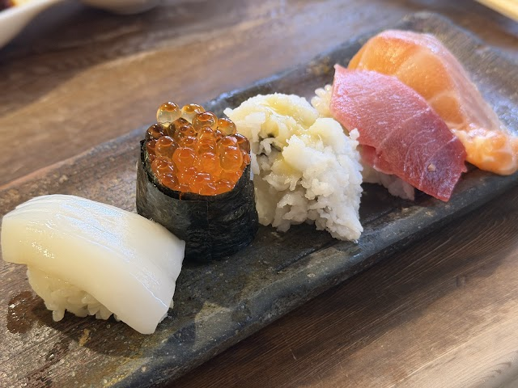
| 営業時間 | 月・火・水・木・金・土 6:15〜14:00 |
|---|---|
| 定休日 | 日曜 |
| 住所 | 大阪府大阪市福島区野田１丁目１−８６ |
| 予約 | 可 — ☎ 06-6469-7108 ／ 公式サイト |
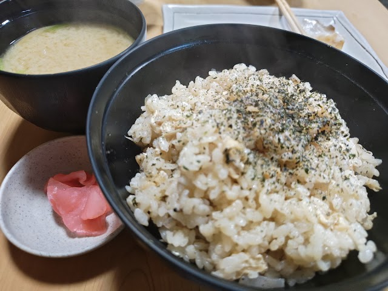
| 営業時間 | 火・水・木・金・土 11:30〜14:30 |
|---|---|
| 定休日 | 月・日曜 |
| 住所 | 大阪府大阪市中央区道頓堀２丁目２−７ |
| 予約 | 要確認 — ☎ 06-6211-1101 |
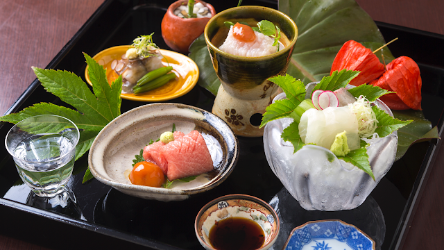
| 営業時間 | 月・火・水・木・金・土 18:00〜0:00 |
|---|---|
| 定休日 | 日曜 |
| 住所 | 大阪府大阪市北区堂島１丁目５−１ エスパス北新地２３ 1階 |
| 予約 | 可 — ☎ 050-3503-5660 ／ 公式サイト |
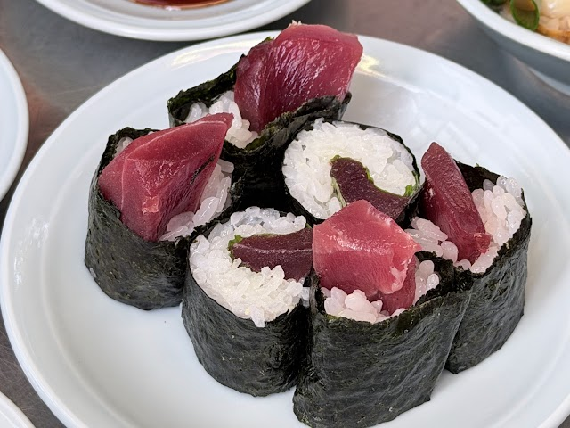
| 営業時間 | 火・水・金 13:00〜17:00 ／ 土 12:00〜17:00 |
|---|---|
| 定休日 | 月・木・日曜 |
| 住所 | 大阪府大阪市都島区東野田町３丁目２−２６ |
| 予約 | 要確認 — ☎ 06-6882-5768 ／ 公式サイト |
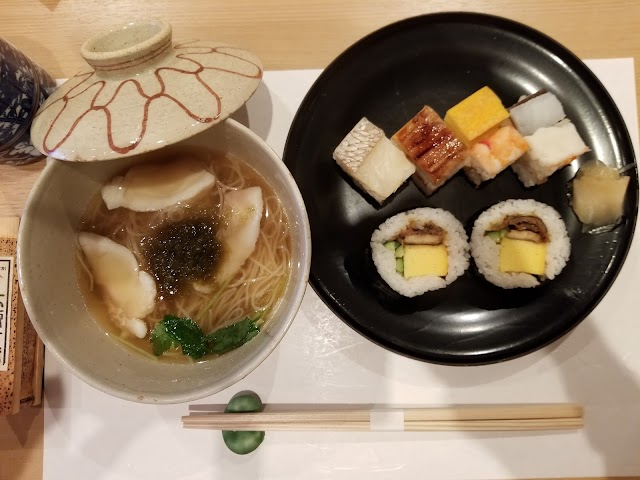
| 営業時間 | 月・火・水・木・金 10:00〜14:00 |
|---|---|
| 定休日 | 土・日曜 |
| 住所 | 大阪府大阪市中央区淡路町３丁目４−１４ |
| 予約 | 可 — ☎ 06-6231-7181 ／ 公式サイト |
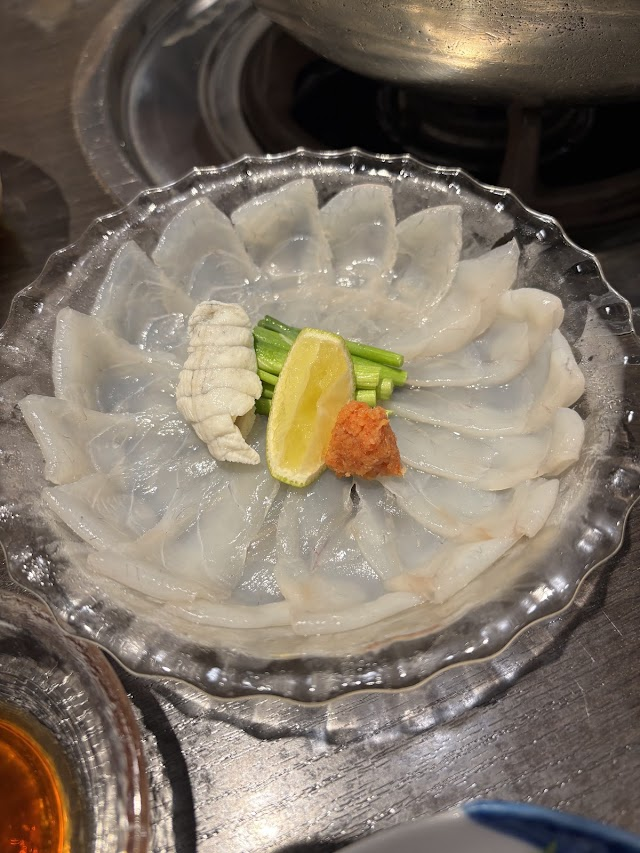
| 営業時間 | 水・木・金・土・日 12:00〜21:00 |
|---|---|
| 定休日 | 月・火曜 |
| 住所 | 大阪府大阪市中央区千日前２丁目７−１８ |
| 予約 | 可 — ☎ 06-6633-4129 ／ 公式サイト |
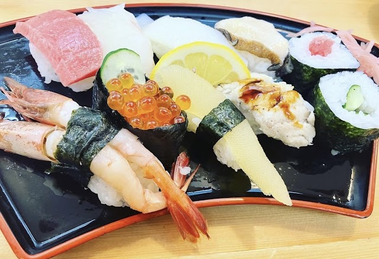
| 営業時間 | 火・水・木・金・土・日 11:30〜22:45 |
|---|---|
| 定休日 | 月曜 |
| 住所 | 大阪府大阪市北区天神橋５丁目６−１９ |
| 予約 | 要確認 — ☎ 050-5590-1767 |
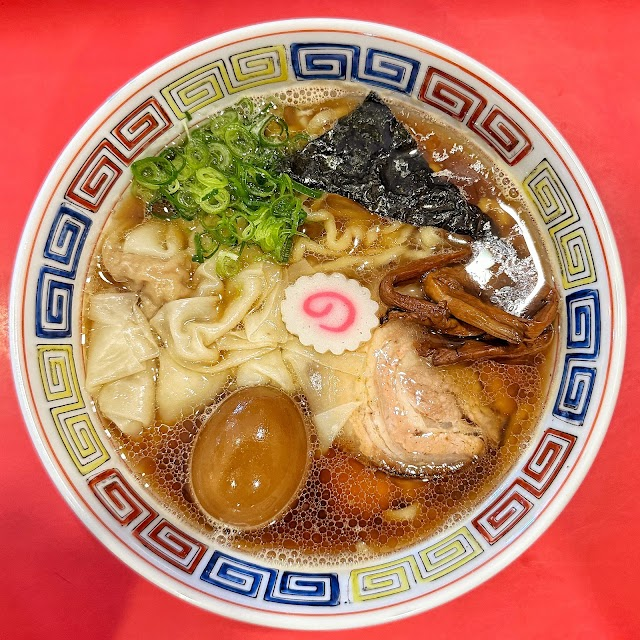
| 営業時間 | 月・木・金・土・日 10:00〜15:00 |
|---|---|
| 定休日 | 火・水曜 |
| 住所 | 大阪府大阪市西区新町４丁目１６−１３ |
| 予約 | 要確認 — ☎ 06-6535-3633 ／ 公式サイト |
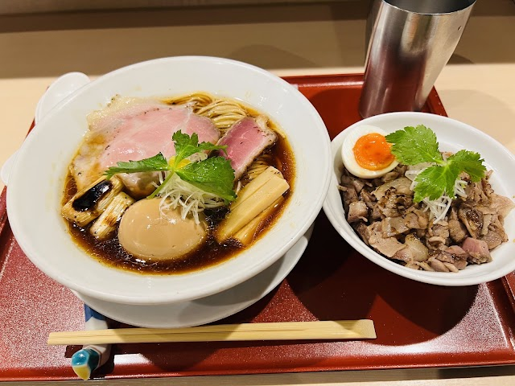
| 営業時間 | 火・水・木・金・土 11:00〜15:00, 18:00〜21:00 ／ 日 11:00〜16:00 |
|---|---|
| 定休日 | 月曜 |
| 住所 | 大阪府大阪市福島区福島５丁目１２−２１ |
| 予約 | 要確認 — ☎ 06-6452-2101 ／ 公式サイト |
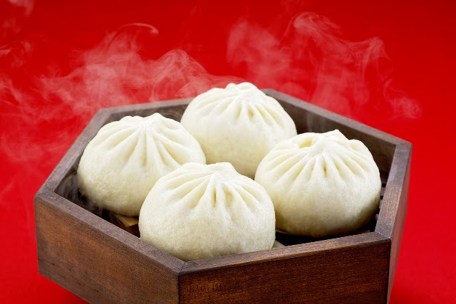
| 営業時間 | 月・水・木・金・土・日 10:00〜21:30 |
|---|---|
| 定休日 | 火曜 |
| 住所 | 大阪府大阪市中央区難波３丁目６−３ |
| 予約 | 可 — ☎ 06-6641-0551 ／ 公式サイト |
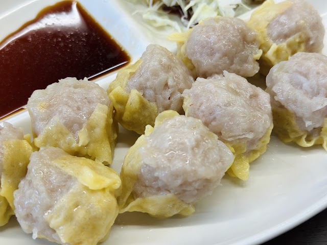
| 営業時間 | 月・火・水・木・金・土 11:30〜20:00 |
|---|---|
| 定休日 | 日曜 |
| 住所 | 大阪府大阪市浪速区浪速区難波中２丁目６−２２ |
| 予約 | 要確認 — ☎ 06-6641-8381 ／ 公式サイト |
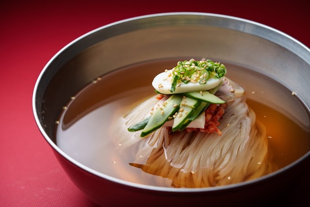
| 営業時間 | 月・火・木・金・土・日 11:30〜15:30, 18:00〜22:30 |
|---|---|
| 定休日 | 水曜 |
| 住所 | 大阪府大阪市東成区東小橋３丁目１９−９ |
| 予約 | 可 — ☎ 06-6977-7744 ／ 公式サイト |
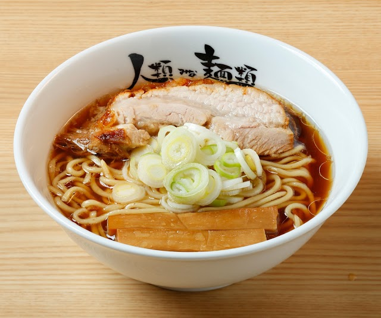
| 営業時間 | 月・火・水・木 10:00〜3:00 ／ 金 10:00〜4:00 ／ 土 9:00〜4:00 ／ 日 9:00〜3:00 |
|---|---|
| 定休日 | なし(要最終確認) |
| 住所 | 大阪府大阪市淀川区西中島１丁目１２−１５ |
| 予約 | 要確認 — 公式サイト |
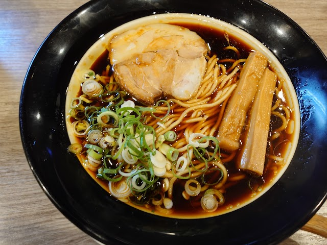
| 営業時間 | 月・木・金・土・日 11:00〜15:00, 17:30〜22:00 ／ 火 11:00〜15:00 |
|---|---|
| 定休日 | 水曜 |
| 住所 | 大阪府大阪市東成区深江北３丁目２−８ シティメゾン深江 |
| 予約 | 要確認 — ☎ 06-6975-8018 ／ 公式サイト |
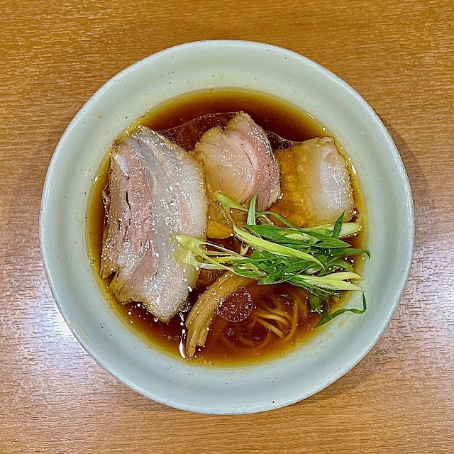
| 営業時間 | 火・水・木・金・土・日 11:00〜14:30, 18:00〜21:00 |
|---|---|
| 定休日 | 月曜 |
| 住所 | 大阪府大阪市中央区上町Ａ−２２ |
| 予約 | 要確認 — ☎ 06-6762-5311 |
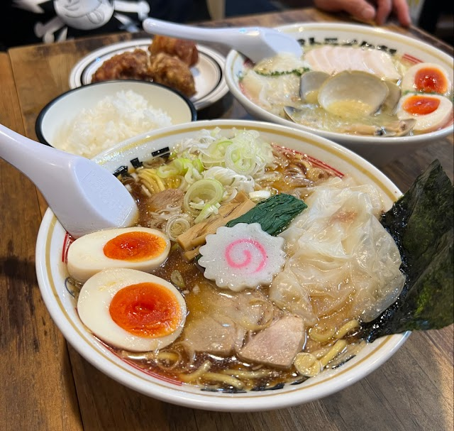
| 営業時間 | 月・火・水・木・金・土・日 11:00〜22:30 |
|---|---|
| 定休日 | なし(要最終確認) |
| 住所 | 大阪府大阪市北区池田町６−８ |
| 予約 | 要確認 — ☎ 06-6352-0633 ／ 公式サイト |
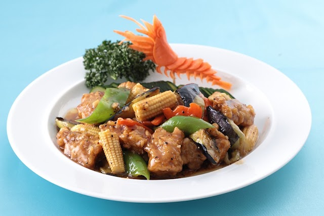
| 営業時間 | 月・火・水・木・金・土・日 11:00〜15:00, 17:00〜22:00 |
|---|---|
| 定休日 | なし(要最終確認) |
| 住所 | 大阪府大阪市中央区東心斎橋１丁目１８−１２ |
| 予約 | 可 — ☎ 06-6271-5238 ／ 公式サイト |
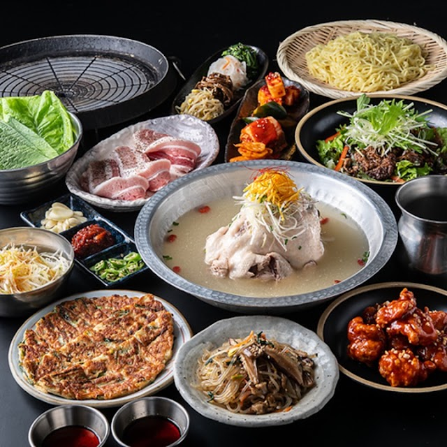
| 営業時間 | 月・火・水・木・金・土・日 12:00〜23:00 |
|---|---|
| 定休日 | なし(要最終確認) |
| 住所 | ループ真田山 1F, ５-14 舟橋町 天王寺区 大阪市 大阪府 543-0024 日本 |
| 予約 | 可 — ☎ 06-6767-2525 ／ 公式サイト |
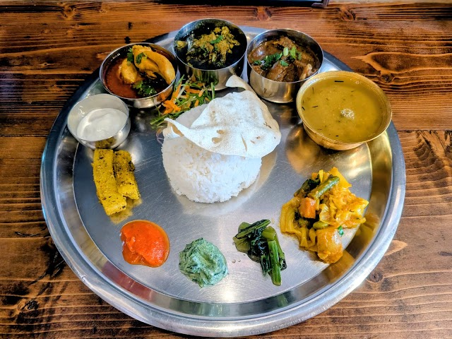
| 営業時間 | 月 11:30〜15:00 ／ 水・木・金・土・日 11:30〜15:00, 17:30〜21:30 |
|---|---|
| 定休日 | 火曜 |
| 住所 | 大阪府大阪市中央区谷町６丁目１３−６ |
| 予約 | 可 — ☎ 06-7708-1611 ／ 公式サイト |
| 営業時間 | 火・水・木・金 11:30〜14:30, 17:00〜23:00 ／ 土・日 11:30〜23:00 |
|---|---|
| 定休日 | 月曜 |
| 住所 | 大阪府大阪市中央区道頓堀１丁目６−１４ 平松扇屋ビル B1 |
| 予約 | 可 — ☎ 06-4708-0088 ／ 公式サイト |
| 営業時間 | 火・水・木・金・土・日 11:00〜19:35 |
|---|---|
| 定休日 | 月曜 |
| 住所 | 大阪府大阪市中央区難波３丁目１−３４ |
| 予約 | 要確認 — ☎ 06-6631-5564 ／ 公式サイト |
| 営業時間 | 月・火・水・木・金・土・日 11:30〜21:30 |
|---|---|
| 定休日 | なし(要最終確認) |
| 住所 | 大阪府大阪市中央区西心斎橋２丁目７−２７ |
| 予約 | 可 — ☎ 06-6211-7829 ／ 公式サイト |
| 営業時間 | 月・水・木・金 11:00〜15:00, 17:00〜22:00 ／ 土・日 11:00〜15:30, 16:30〜21:30 |
|---|---|
| 定休日 | 火曜 |
| 住所 | 大阪府大阪市阿倍野区阿倍野筋１丁目６−１ ヴィアあべのウォーク130 |
| 予約 | 要確認 — ☎ 06-6649-3566 |
| 営業時間 | 11:00〜16:00（10:00から整理券配布、売り切れ次第終了） |
|---|---|
| 定休日 | 日曜・祝日 |
| 住所 | 大阪府大阪市中央区瓦町４丁目５−３ NIPPO 西本町ビル 日宝西本町ビル1F |
| 予約 | 要確認 — 公式サイト |
| 営業時間 | 水・木・金・土 11:30〜14:00, 18:00〜21:00 ／ 日 11:20〜14:00, 18:00〜20:00 |
|---|---|
| 定休日 | 月・火曜 |
| 住所 | 大阪府大阪市中央区谷町６丁目４−２３ |
| 予約 | 要確認 — ☎ 06-6762-8619 ／ 公式サイト |
| 営業時間 | 月・火・水・木・金 18:00〜22:00 ／ 土 12:00〜15:00, 18:00〜22:00 |
|---|---|
| 定休日 | 日曜 |
| 住所 | 大阪府大阪市中央区瓦町３丁目２−１５ |
| 予約 | 可 — ☎ 06-6222-2010 ／ 公式サイト |
| 営業時間 | 火・水・木・金・土 11:00〜15:00 |
|---|---|
| 定休日 | 月・日曜 |
| 住所 | 大阪府大阪市中央区道修町１丁目３−３ 戎道修町ビル 2F |
| 予約 | 要確認 — ☎ 06-6203-7788 ／ 公式サイト |
| 営業時間 | 月・火・水・木・金・土・日 11:30〜14:30 |
|---|---|
| 定休日 | なし(要最終確認) |
| 住所 | 大阪府大阪市西区京町堀１丁目９−１０ |
| 予約 | 要確認 — ☎ 06-6443-6295 ／ 公式サイト |
| 営業時間 | 月・火・水・木・金・土・日 12:00〜14:00, 17:00〜19:30 |
|---|---|
| 定休日 | なし(要最終確認) |
| 住所 | 大阪府大阪市浪速区恵美須東１丁目１７−１７ |
| 予約 | 要確認 — ☎ 06-6632-3765 |
| 営業時間 | 月 11:00〜15:00 ／ 火・木・金・土・日 11:00〜15:00, 17:00〜20:00 |
|---|---|
| 定休日 | 水曜 |
| 住所 | 大阪府大阪市中央区心斎橋筋１丁目５−３２ |
| 予約 | 要確認 — ☎ 06-6271-6761 ／ 公式サイト |
| 営業時間 | 月・火・水・木・金・土・日 11:30〜15:00, 18:00〜22:00 |
|---|---|
| 定休日 | なし(要最終確認) |
| 住所 | 大阪府大阪市中央区北浜１丁目８−１６ 大阪証券取引所ビル 1F |
| 予約 | 可 — ☎ 06-6229-7770 ／ 公式サイト |
| 営業時間 | 月・木・金・土・日 12:00〜14:00, 18:00〜20:00 |
|---|---|
| 定休日 | 火・水曜 |
| 住所 | 大阪府大阪市中央区高麗橋１丁目５−２２ Nビル １Ｆ |
| 予約 | 可 — ☎ 06-4706-7524 ／ 公式サイト |
| 営業時間 | 月・水・木・金・土・日 11:00〜22:00 |
|---|---|
| 定休日 | 火曜 |
| 住所 | 大阪府大阪市天王寺区下味原町１−１０ |
| 予約 | 可 — ☎ 06-6773-1300 ／ 公式サイト |
| 営業時間 | 月・火・水・木・金・土・日 9:00〜20:00 |
|---|---|
| 定休日 | なし(要最終確認) |
| 住所 | 大阪府大阪市中央区難波３丁目２−２８ |
| 予約 | 要確認 — ☎ 0120-572-132 ／ 公式サイト |
| 営業時間 | 月・水・木・金・土・日 10:00〜21:45 ／ 火 10:00〜21:15 |
|---|---|
| 定休日 | なし(要最終確認) |
| 住所 | 大阪府大阪市中央区道頓堀１丁目７−４ |
| 予約 | 要確認 — ☎ 06-6211-2100 ／ 公式サイト |
| 営業時間 | 月・火・水・木・金 11:30〜19:00 ／ 土・日 9:00〜19:00 |
|---|---|
| 定休日 | なし(要最終確認) |
| 住所 | 大阪府大阪市浪速区恵美須東３丁目４−１５ |
| 予約 | 要確認 — ☎ 06-6645-1303 ／ 公式サイト |
| 営業時間 | 月・火・水・木・金 10:00〜19:00 ／ 土 10:00〜18:00 |
|---|---|
| 定休日 | 日曜 |
| 住所 | 大阪府大阪市北区堂島３丁目４−１０ |
| 予約 | 要確認 — ☎ 06-6451-3819 |
| 営業時間 | 月・火・水・木・金・土 9:00〜19:00 ／ 日 9:00〜18:00 |
|---|---|
| 定休日 | なし(要最終確認) |
| 住所 | 大阪府大阪市住吉区帝塚山東１丁目４−１２ |
| 予約 | 要確認 — ☎ 06-6671-5840 ／ 公式サイト |
| 営業時間 | 月・火・水・木・金 9:00〜18:00 ／ 土 9:00〜16:00 |
|---|---|
| 定休日 | 日曜 |
| 住所 | 大阪府大阪市北区天神橋２丁目３−２１ |
| 予約 | 要確認 — ☎ 06-6351-2949 |
| 営業時間 | 月・火・水・木・金・土・日 8:00〜23:00 |
|---|---|
| 定休日 | なし(要最終確認) |
| 住所 | 大阪府大阪市中央区千日前１丁目９−１ |
| 予約 | 要確認 — ☎ 06-6211-3474 ／ 公式サイト |
| 営業時間 | 月・火・水・木・金 9:00〜20:30 ／ 土 9:00〜18:00 |
|---|---|
| 定休日 | 日曜 |
| 住所 | 大阪府大阪市北区梅田１丁目３−１ 大阪駅前第１ビル B1 |
| 予約 | 要確認 — ☎ 06-6345-3400 ／ 公式サイト |
| 営業時間 | 月・火・木・金 8:00〜19:00 ／ 土 8:00〜17:00 |
|---|---|
| 定休日 | 水・日曜 |
| 住所 | 大阪府大阪市中央区淡路町４丁目３−１ |
| 予約 | 要確認 — ☎ 06-6205-7720 ／ 公式サイト |
| 営業時間 | 月・火・水・木・金・土・日 9:00〜20:00 |
|---|---|
| 定休日 | なし(要最終確認) |
| 住所 | 大阪府大阪市阿倍野区帝塚山１丁目６−１６ |
| 予約 | 要確認 — ☎ 06-6623-1101 ／ 公式サイト |
本ガイドは個人利用目的で作成。掲載情報は2026年8月時点の調査に基づく。写真出典: Google Maps投稿写真(©各投稿者/Google)。